CS 463G & CS 663
(Intro to) AI
Lecture 12: Genetic Algorithms
Fall 2026
Population-Based Search
A genetic algorithm (GA) searches with a population of candidate solutions. A generation is one round of reproduction and replacement.
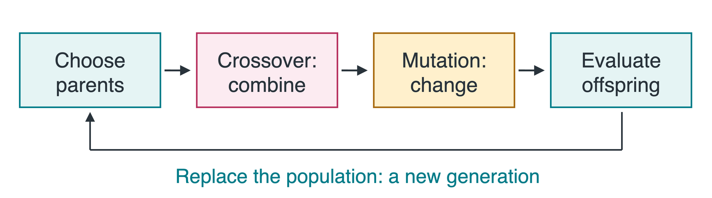
- Selection chooses parents using solution quality.
- Crossover combines parents; mutation introduces random changes.
Unlike the single-state methods in Lecture 11, a GA keeps several candidates. More candidates do not guarantee a solution.
Encoding an 8-Queens Board
Place eight queens so that no pair shares a row, column, or diagonal. Let x_i be the row of the queen in column i.
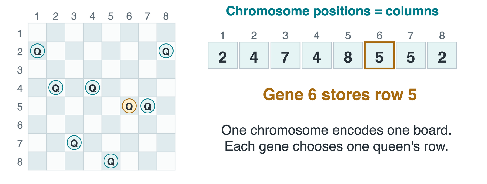
A gene is one entry x_i; a chromosome is the full candidate x=(x_1,\ldots,x_8).
One queen per column is automatic. Repeated rows are allowed in a candidate.
Fitness: Count Non-Attacking Pairs
There are \binom{8}{2}=28 unordered queen pairs. Let c(x) count attacking pairs; maximize fitness F(x)=28-c(x).
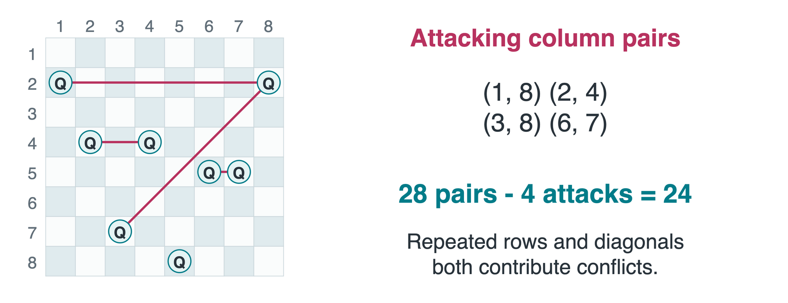
Is F(x)=24 a solution? No. All 28 pairs must be non-attacking.
Selecting Parents
Select parents with probability proportional to fitness.
| A |
24748552 |
24 |
| B |
32752411 |
23 |
| C |
24415124 |
20 |
| D |
32543213 |
11 |
Candidate i’s fitness: F_i
P(\text{choose }i)=F_i/78.
Total fitness: 78. For B: 23/78\approx29.5\%.
Draw u uniformly in [0,1).
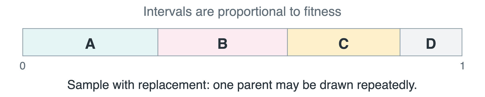
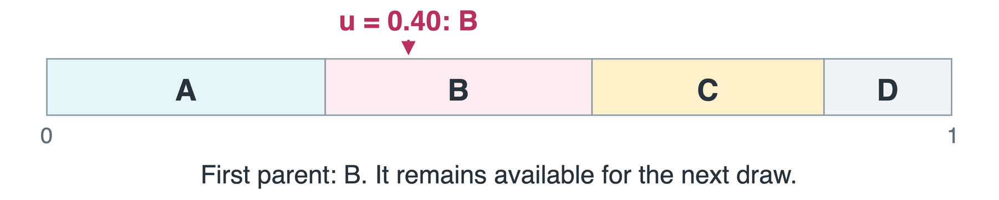
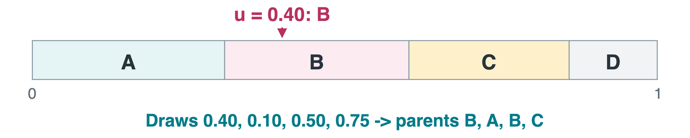
First draw: B. Keep B available for later draws.
Selected parents: B, A, B, C; next, form two pairs.
One-Point Crossover
For the first selected pair B and A, choose a cut after gene 3. A child, or offspring, inherits a prefix from one parent and a suffix from the other.
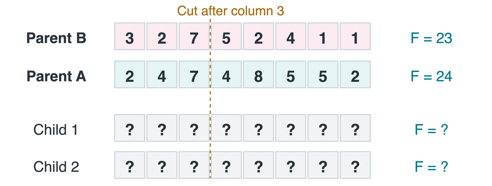
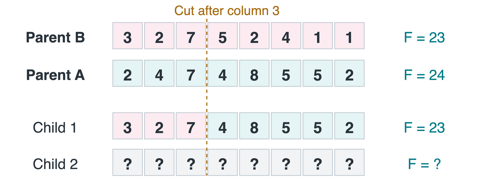
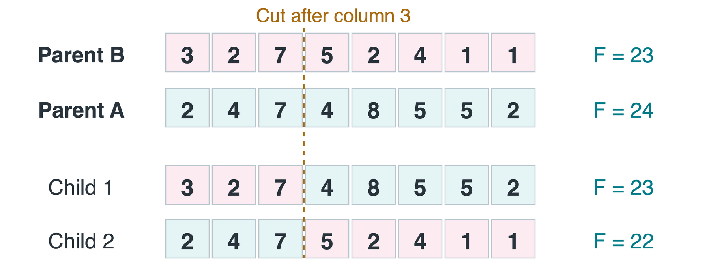
Child 1: B’s prefix + A’s suffix.
Child 2 uses the other two segments. A valid encoding is preserved, but fitness need not improve.
Mutation: Change a Gene
In this encoding, each gene may independently change to another row. For example, use mutation probability p_{\text{gene}}=0.10.
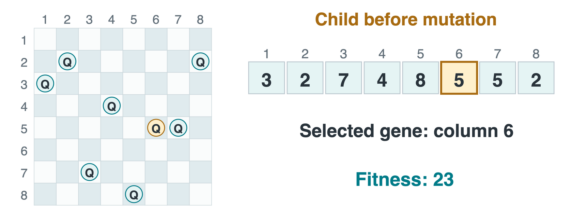
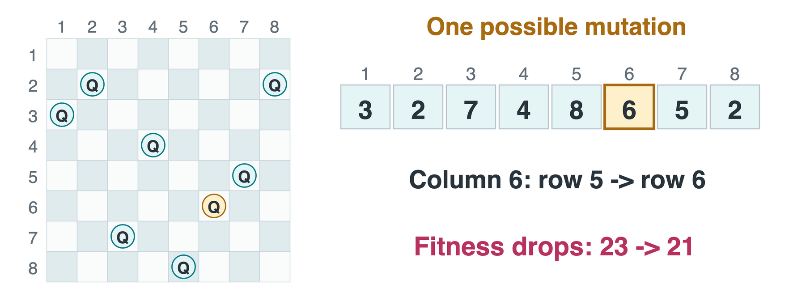
This mutation makes the child worse. Mutation introduces variation; it does not promise improvement.
Replacement and Elitism
Cross B and C at the same cut. Of the four children, mutate only child 1 from B and A.
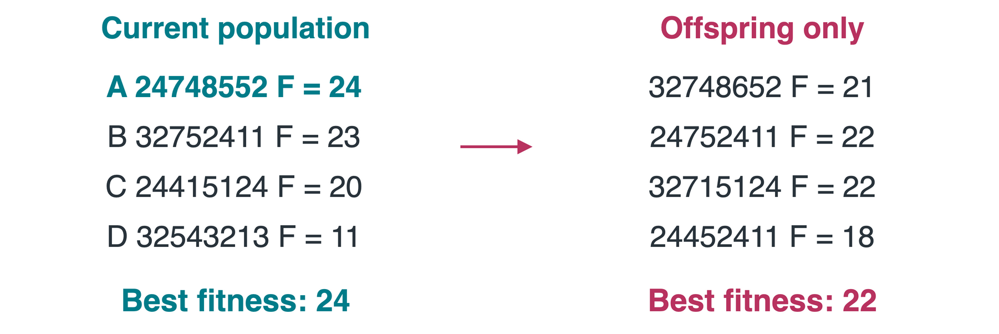
How can we keep the best fitness from dropping? Elitism: copy the best candidate unchanged, then fill the remaining slots with children.
Keeping one elite protects the best score, not the average. Keep the population size fixed.
Genetic Algorithm Pseudocode
N is population size; G is the generation budget. EVALUATE assigns fitness F. This version keeps one elite.
GENETIC(N, G, target)
P <- RANDOM_POP(N); EVALUATE(P)
best <- COPY(ARGMAX_F(P))
for generation in 1 .. G:
if F(best) = target: break
next <- [COPY(ARGMAX_F(P))]
while SIZE(next) < N:
a, b <- SELECT(P), SELECT(P)
child <- MUTATE(CROSSOVER(a, b))
APPEND(next, child)
P <- next; EVALUATE(P)
if MAX_F(P) > F(best): best <- COPY(ARGMAX_F(P))
return best
ARGMAX_F returns a highest-fitness candidate; MAX_F returns its score. For eight queens, target = 28.
A Different Encoding: Permutations
Require each row number to appear exactly once. A permutation then prevents both row and column conflicts; only diagonals remain.
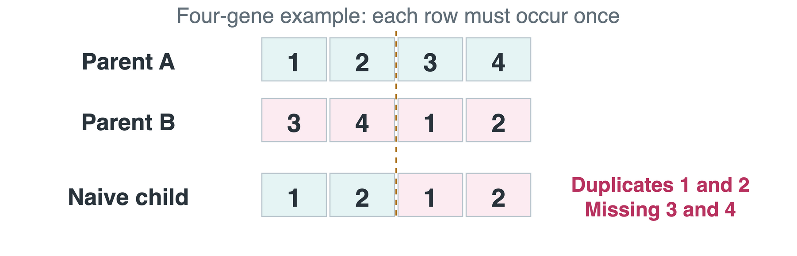
Operators must preserve the encoding. The notebook uses a permutation-preserving crossover, not ordinary one-point crossover.
Permutation-Preserving Crossover
Copy a segment from A, then fill the gaps using unused values in B’s order.
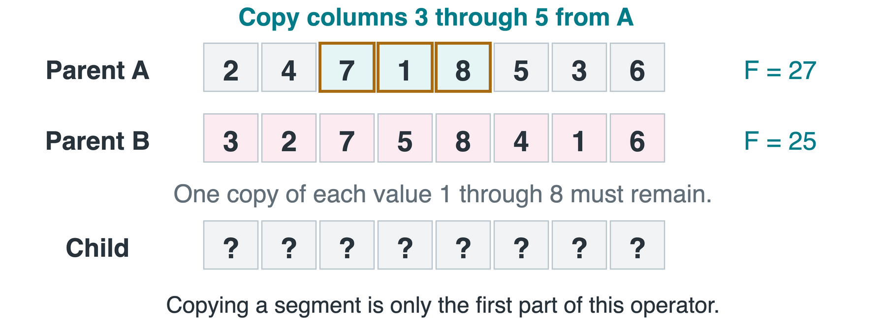
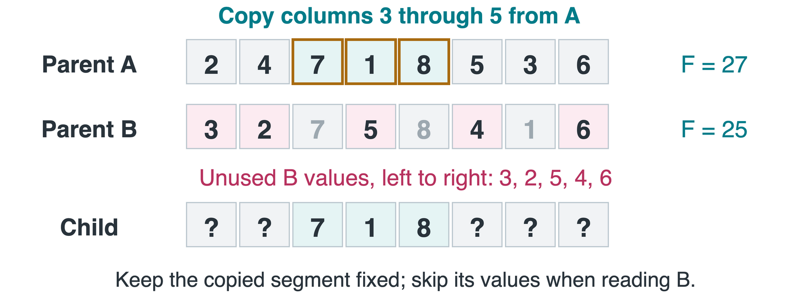
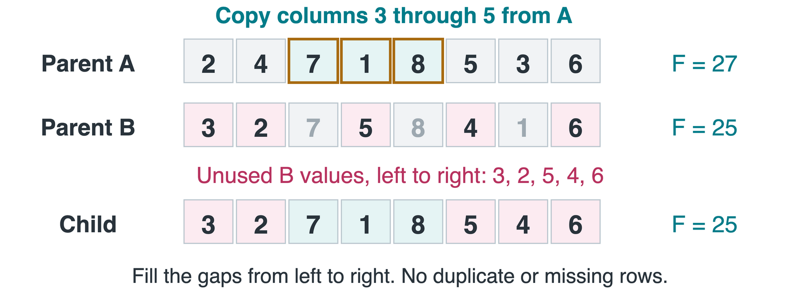
Keep 7, 1, 8 fixed. B contributes 3, 2, 5, 4, 6.
The child is a permutation, but its fitness is 25, below A’s 27.
Mutation Depends on the Encoding
A permutation cannot freely replace one value: it could create a duplicate. Swap mutation exchanges two positions instead.
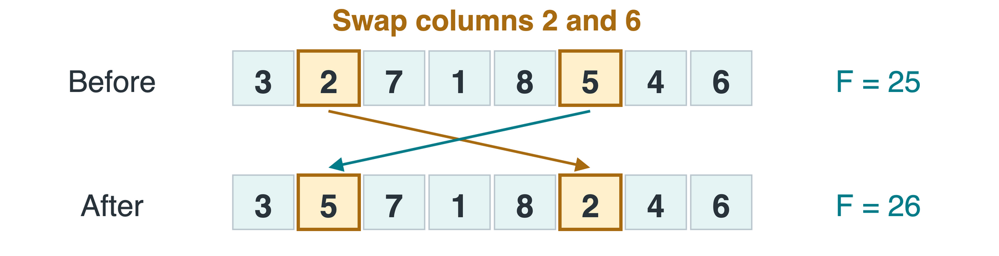
| 0.10 chance per gene to replace its row |
0.30 chance per child to swap two entries |
| Several genes may change independently |
At most one swap per child |
These rates describe different events. A swap preserves the permutation, but may improve or worsen fitness.
Diversity and Stopping
Diversity means having different chromosomes in the population. Strong selection can make the population increasingly similar.
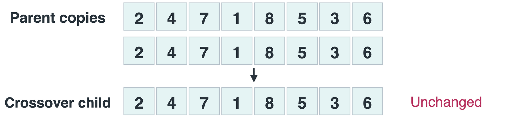
Can crossover alone create a new chromosome from identical parents? No. Mutation can introduce variation that is missing from the population.
- Stop at the target fitness or a time / generation budget.
- Keep the best candidate; report whether it actually reached the target.
- Compare several random seeds, including unsuccessful runs.
Takeaways
| Encoding |
Row vector; repeats allowed |
Permutation of rows |
| Parent selection |
Fitness-weighted sampling |
Tournament: best of 10 random candidates |
| Crossover |
Exchange tails at one cut |
Copy a segment, fill unused values |
| Mutation |
Replace individual genes |
Swap two positions |
| Replacement |
Full replacement can lose the best |
Keep one elite |
Define the encoding and fitness first. Selection favors, crossover combines, and mutation varies candidates; none alone guarantees a solution.
Code: Genetic N-Queens notebook
Notebook defaults: n=30, target fitness 435, row indices 0 to 29.
Asset credits